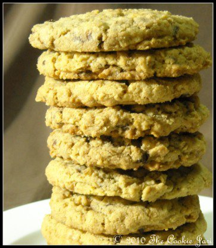

oatmeal chocolate chip cookie

Description
These cookies are great. There good for parties, sleepovers, ect.. You'll love them! Enjoy!!!
These oatmeal chocolate chip cookies are made with oats, butter, and brown sugar and are the softest, chewiest oatmeal cookies to come out of my kitchen.
Use this perfect oatmeal cookie as the base for other add-ins such as raisins, dried cranberries, and nuts. Cinnamon and a touch of molasses add that little something extra. These are the best oatmeal chocolate chip cookies!
Ingredients
- 1 cup butter
- 3/4 cup packed brown sugar
- 1/4 cup white sugar
- 1 teaspoon vanilla extract
- 1 1/2 cups all-purpose flour
- 1/2 teaspoon salt
- 1 teaspoon baking soda
- 1/4 cup boiling water
- 2 cups quick cooking oats
- 1 1/2 cup semisweet chocolate chips
Steps:
- Beat butter or margarine, sugars and vanilla until light and fluffy. Add flour and salt, mix well.
- Dissolve baking soda in boiling water and add to mixture. Stir in rolled oats, raisins and chocolate chips.
- Drop by teaspoonful onto ungreased cookie sheet. Bake at 350 degrees F (175 degrees C) for 10-12 minutes. Don't over cook. (There are no eggs in this recipe, I didn't forget to type it down).